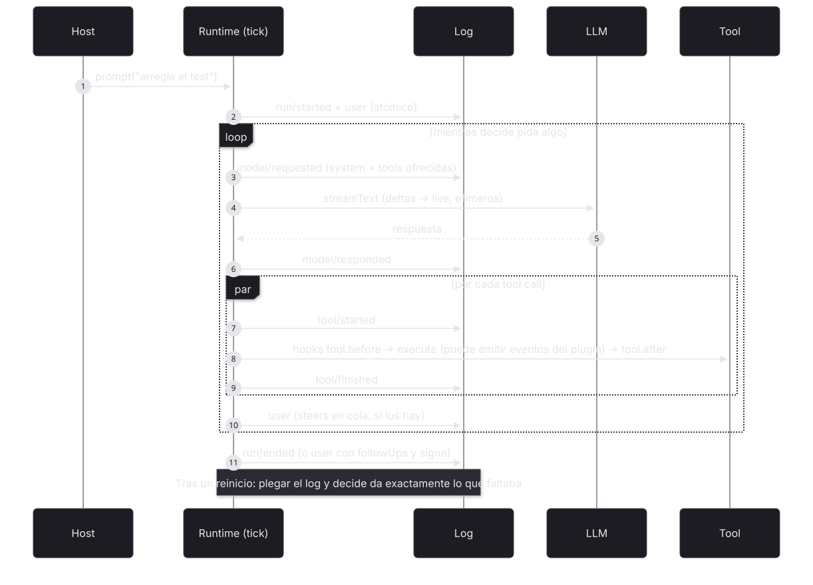
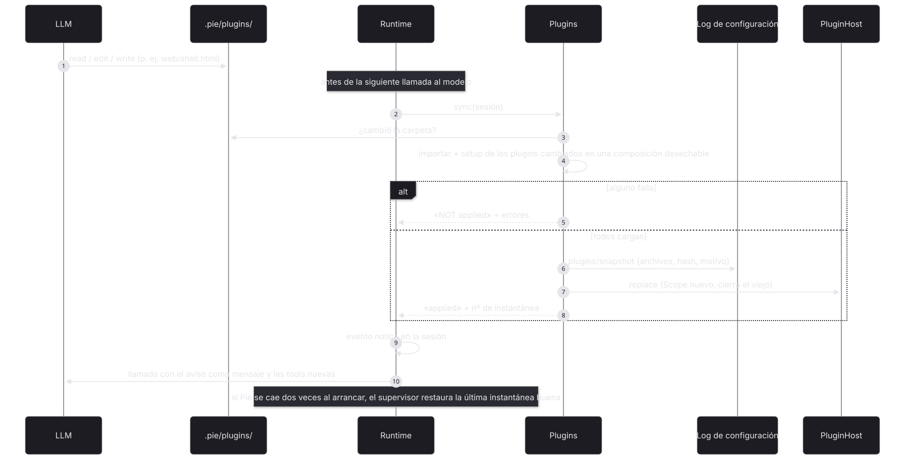

Lo durable siempre son eventos (log de sesión y log de configuración); lo vivo son efectos que se derivan de ellos. Si algo puede ser plugin, es plugin. Detalle en docs/EVENTOS.md.

El agente es un programa Elm: evolve(estado, evento) y decide(estado, ahora) son puras. El runtime pliega la rama, pregunta a decide qué falta y lo ejecuta; los resultados vuelven al log como eventos. Reanudar tras un reinicio es lo mismo que cualquier otro tick.


model/requested guarda el prompt del sistema y las tools ofrecidas: lo que ve el modelo está en el log. Los ids de evento son deterministas (run, turno, llamada), así que repetir un paso nunca duplica nada.El SDK es fijo; cada plugin es una carpeta en .pie/plugins/ que el agente edita con sus tools normales; Pie aplica los cambios solo antes del siguiente paso (o le dice por qué no). Cada cambio aplicado guarda una instantánea completa de la carpeta; volver a cualquiera es pie rollback (el agente lo lanza con bash; también desde la web, o el supervisor si Pie no arranca).


| Tabla | Qué guarda |
|---|---|
| pie_events | Toda la sesión, en árbol: eventos del núcleo y de plugins |
| pie_sessions | cwd, modelo inicial y hoja de la rama actual |
| pie_config | Instantáneas de la carpeta de plugins y marcas de configuración buena |
| pie_cursors | Hasta dónde ha procesado cada reacción en cada sesión |
| pie_workflow | Journal de los workflows de Effect: ejecuciones, actividades, deferreds, relojes, resultados |
| pie_lock | Un runtime por base de datos |
session.live. Las proyecciones de los plugins tampoco: se recalculan plegando la rama.

| Caso | Qué pasa | |
|---|---|---|
| SIGKILL con un turno del modelo ya respondido | No se vuelve a llamar al modelo. | probado |
| SIGKILL durante una tool idempotente | Se repite. | probado |
| SIGKILL durante una tool no idempotente | No se repite: «outcome unknown». | probado |
| SIGKILL a mitad del stream del modelo | model/requested sin respuesta: se repite la llamada. | implementado |
| Fallo del proveedor | model/failed con hora de reintento; 3 intentos con backoff; luego failed. | probado |
| prompt con un run activo / steer / followUp | SessionBusy; steer tras las tools; followUp al terminar, en el mismo run. | probado |
| abort durante una tool | La tool se corta, el run acaba aborted, la sesión queda libre. | probado |
| Ids de tool repetidos entre turnos | Los ids de evento incluyen el turno. | probado |
| Tools de plugin en paralelo que leen estado | Los eventos registran hechos; ids y contadores los deriva la proyección. | probado |
| Bifurcar (navigate) con estado de plugin | La proyección es la de la rama. | probado |
| Plugin roto, o que usa un punto de política | Rechazado en la validación; nada cambia. | probado |
| Instalar un plugin a mitad de run | Se aplica antes del siguiente paso y su tool aparece en esa llamada; si no carga, el agente recibe los errores. | probado |
| Workflow de Effect con SIGKILL | Actividades hechas no se repiten; el reloj mantiene su hora; la aprobación lo reanuda; el resultado queda guardado. | probado |
| Dos procesos sobre la misma base de datos | Bloqueo con caducidad de 3 s; el segundo espera hasta 10 s y falla. | implementado |
| Reacción nueva sobre sesiones existentes | Empieza desde ahora, no desde el historial. | implementado |
| Sesiones muy largas | Las proyecciones pliegan la rama entera en cada lectura; harán falta instantáneas. | pendiente |
| Bifurcar una sesión con workflows en marcha | El journal de workflows no forma parte del árbol de la sesión. | riesgo |
| Cambiar tipos o payloads de eventos del núcleo | Son el contrato durable: solo cambios compatibles. | riesgo |
import { Pie, Plugin, Storage, TodoPlugin, defineTool } from "pie-agent" const PieLive = Pie.layer({ storage: Storage.sqlite("pie.db"), // o Storage.memory plugins: [...Pie.builtins, TodoPlugin], // opencode-go, system-prompt, context-files, coding-tools reload: "hot" // o "restart" con Supervisor.run + Pie.exitOnRestart }) const program = Effect.gen(function*() { const pie = yield* Pie.Pie const session = yield* pie.create({ cwd: "/repo", model: "opencode-go/deepseek-v4.1-flash" }) yield* session.live.pipe(Stream.runForEach(onEvent), Effect.forkScoped) // eventos + deltas yield* session.prompt("arregla el test") const outcome = yield* session.awaitIdle // run/ended: completed | failed | aborted const events = yield* session.events // la rama actual: toda la verdad yield* session.navigate(events[1].id) // bifurcar desde ahí }) // Un plugin con estado: extend + derive + tool que emite + view export default Plugin.define({ id: "notes", setup: (ctx) => Effect.gen(function*() { yield* ctx.events({ added: Schema.Struct({ text: Schema.String }) }) const notes = yield* ctx.projection({ id: "notes", initial: () => [], on: { "notes/added": (s, e) => [...s, e.text] } }) yield* ctx.tools.transform((t) => t.set("note_add", defineTool({ ..., execute: ({ text }, tool) => Effect.as(Effect.orDie(tool.emit("notes/added", { text })), { content: "saved" }) }))) yield* ctx.hook("context", (e) => Effect.map(notes.get(e.sessionId), (n) => void e.system.push({ key: "notes", text: n.join("\n") }))) yield* ctx.react({ id: "audit", on: ["tool/finished"], run: (event, r) => ... }) }) })